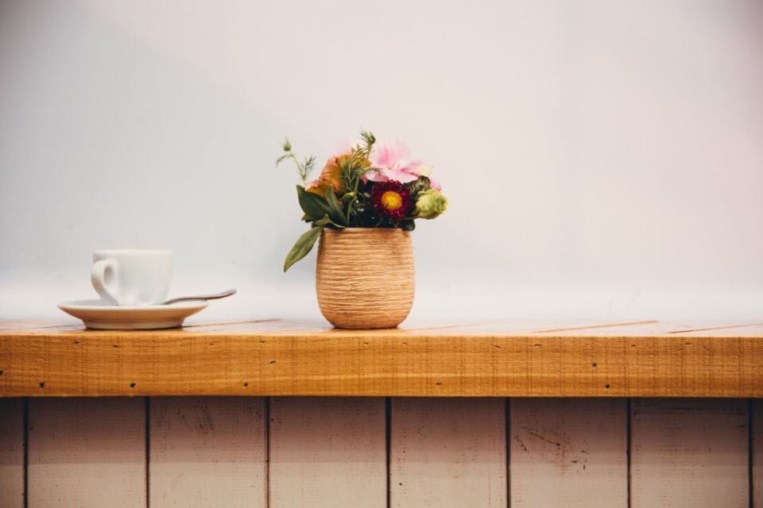

Ana sayfa / Moda'da bir sabah
Moda'da bir sabah
Kahvaltıdan kalkınca semt sizin: sahil, park, cadde ve çarşı.
Aşağıdakiler Moda'yı sevenlerin bildiği genel öneriler. Duraklar arasındaki yolu ve mesafeyi yola çıkmadan haritadan kontrol etmenizi öneririz.
Sabah rotanızı çizin
Hazır bir rota seçin ya da duraklara tek tek dokunun. Plan, seçtiğiniz sırayla “Sabah planınız” kutusunda oluşur; kopyalayıp yanınızdakilere gönderebilirsiniz.
Hazır rotalar
Mevsim mevsim Moda sabahı
Güneş yazın yükseğe tırmanır, kışın ufka yakın gezinir. Moda'da sabahın tadı da mevsimle değişir.
İlkbahar
Havalar ısınırken sahil yürüyüşünün en keyifli dönemi. Deniz kenarında rüzgâr serin olabilir; ince bir hırka alın.
Yaz
Sabah serinliği değerli. Kahvaltıdan sonra sahile erken inin, güneş tepeye çıkmadan gölgede bir bank bulun.
Sonbahar
Işığın yumuşadığı aylar; sahilde uzun bir yürüyüş ve vapurla dönüş için güzel günler.
Kış
Rüzgârlı günlerde sahil kısa, çay uzun sürer. Lodosta kıyıya vuran dalgaları izlemek de bir Moda alışkanlığı.

Temsili görselYola çıkmadan küçük notlar
- Rahat ayakkabı giyin; Moda'nın sokaklarında yokuşlar ve taş kaplı yollar olabilir.
- Sahilde rüzgâr çoğu zaman şehrin içinden serindir; ince bir kat işinize yarar.
- Hafta sonları semt kalabalıklaşabilir. Kahvaltı için yer talebinizi önceden iletmek planınızı kolaylaştırır.
- Martılar simidi sever: sahilde elinizdekine sahip çıkın.
- Pazartesi kapalıyız; Moda planınızı Salı–Pazar günlerine kurun. Çarşamba 16:00'da, diğer günler 17:00'de kapanıyoruz.
- Moda Sahili gün batımıyla da bilinir; günü orada bitirmek isteyebilirsiniz.
Moda'ya nasıl gelinir?Vapur, metro, Marmaray ve Moda tramvayıyla ulaşım seçeneklerini İletişim sayfasında topladık.
Yol tarifine bakın